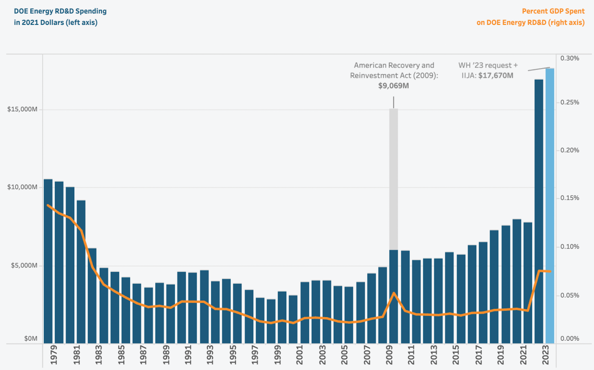

Let's Fund researches pressing problems, like climate change, and then crowdfunds for nonprofits working on effective policy solutions. One such policy is clean energy innovation (e.g. giving more grants to scientists for inventing better solar panels).
Making clean energy cheaper has many benefits because it reduces:
- Emissions
- Energy poverty
- Air pollution (which kills millions a year)
- Revenue for autocratic petrostates
- Extreme climate risks (since if countries agreements to reduce emissions like Paris were to break down, cheaper clean energy hedges against this)
Since 2019, we’ve crowdfunded $1M for the Center for Clean Energy Innovation (CCEI) at ITIF, a non-profit think tank in DC. One example of our grantees work is researching the effects of higher and smarter clean energy R&D spending and communicating the results to policy-makers. Our research showed that this is the most effective climate policy and was featured on Vox (which Bill Gates retweeted!).
As a result, ~2000 donors crowdfunded a $1M+ for CCEI to do more think tank work (e.g. do research, talk to policy-makers, etc.).
Here I show how with our grant, CCEI might have e.g. shifted >$100M from less effective clean energy deployment (e.g. subsidies) to more neglected and effective clean energy R&D. The donations might avert a ton CO₂ for less than $0.10.
That a leading think tank can cause such shifts becomes plausible, if we look at the pivotal ('hingey') timeline of a political climate so favorable that climate budgets went up by an unprecedented scale:
2020: Big Government Dems win the presidency, house and a razor-thin margin senate majority. Then a CCEI researcher gets a job advising Biden's climate envoy, John Kerry, who had endorsed and blurbed CCEI's Energizing America report and which has been called 'a very influential report', and advice for Biden on how to reform the energy innovation system.
2021: COVID leads to a massive stimulus that includes ~$42B for clean energy RD&D, doubling the yearly budget- an ~$10B increase: ,

This US leadership led 16 countries to pledge ~$100B for the Clean Energy Technologies Demonstration Challenge recently.
These increases were politically tractable thanks to tens of thousands of climate activists raising awareness worldwide. But CCEI is part of a much smaller coalition of only hundreds of key movers and shakers (others are: CATF, Carbon180, etc.) that improved the quality of these spending increases by channeling them towards energy RD&D, which is ~10x more effective at ~$10/tC than deployment at ~$100/tC averted (more).
Also, our $1M grant was ~2% of donations to US climate governance and a respectable 0.2% to all US think tanks.,, Based on this, if we assume CCEI caused ~.1-10% of the $10B-100B clean energy RD&D increases—then, our Monte Carlo model (see UseCarlo.com) suggests that CCEI averts ~.5Gt at ~$.002/tC:
| Distribution | p0 | p10 | p50 | p90 | UseCarlo.com output | Notes / Source |
|
|
|
|
|
|
|
|
Energy R&D budget increase | Metalog | $0K | $10B | $42B | $100B | ~50Gt | P10: US increases / y. P50: total stimulus. P90: global agreement |
CCEI's effect of shifting deploy$ to RD&D$ | Metalog | 0% | 0.1% | 2% | 10% | ~5% | Guesstimate: CCEI is part of the coalition of key movers and shakers that shifted budget increases to energy RD&D |
RD&D effectiveness | Metalog | $0 | $3 | $13 | $41 | ~$20/tC | Review on the cost-effectiveness of energy R&D |
Deployment effectiveness | Metalog | $0 | $0.1K | $0.5K | $1K | ~$500/tC | |
tC averted via R&D shift | Output |
|
|
|
| ~0.5Gt | tC averted by R&D- Counterfactual tC averted by deployment |
|
|
|
|
|
|
|
|
Let's Fund grant |
|
|
|
|
| ~$1M |
|
CCEI effectiveness |
|
|
|
|
| ~$0.002/tC |
|
Donor effectiveness |
|
|
|
|
| ~$0.02/tC |
|
Most of the impact is due to a grantee, but Let's Fund donors might claim 10% credit of the grantee's impact. And so, donations had a cost-effectiveness ~$.02/tC (2¢) averted (≈ to Founders Pledge estimate of the Clean Air Taskforce's effectiveness).
Crucially, CCEI also improved the quality of energy R&D spending (e.g. they argued that we should spend more on neglected, hard-to-abate sectors like hydrogen or geothermal [more],):
In 2022, the War in Ukraine, similar to the 70's oil shock, caused even more spending on clean energy: the US passed the Inflation Reduction Act, the biggest piece of climate legislation ever, with $400B-800B (or $1.7T with a fiscal multiplier) in climate spending over the next decade (mostly for infrastructure / deployment).,
Short-term, the lower bound of $400B might avert ~4Gt of US emissions. But what if the US were to spend ~$1T and we account for longterm effects and global spillovers of innovation? (cf. German subsidies used to drive ~⅓ of the global solar adoption, ~85% of which was abroad).,
We guesstimate that the Inflation Reduction Act might avert 72Gt (≈1.5x of global yearly emissions). If CCEI's work with our $1M grant increased deployment effectiveness by .1-1% that might be avert ~.1-1Gt for ~$.01/tC. (timeline).
These guesstimates must not be taken literally as they have weaknesses that might push down the effectiveness. The above is just a soft lower bound of CCEI's effectiveness. Then again, CCEI's work has many diffuse, hard-to-estimate and unmodeled benefits that increase its impact:
- CCEI helped conceive the DoE's new non-profit Foundation for Energy Security and Innovation.
- CCEI runs an Climate-Tech Policy Boot Camp for early career researchers
Finally, by donating bed nets or cash, you can save a life for less than $10k. Should we donate to global poverty instead of averting ~$1/tC? As I've written elsewhere, it crucially depends on the social cost of carbon, which a meta-analysis finds is ~$100/tC (range: –$400 +$600/tC). Others say it could be as high as $4k under different assumptions (e.g. that money makes you exponentially less happy the richer you are, and so giving cash to the poorest, who are hit hardest by climate change, is really ~100x better than to people in rich countries)., All these estimates have methodological problems. But, as a rule, cash is 2x as effective as any extra R&D and targeted clean energy R&D to reduce energy poverty might be even more effective, as poor people will soon rely on off-grid solar, with current sales at only $3B/year—so reducing cost by 1% would save them $30M/year (but see).
I'll end with a simple BOTEC of what it takes to get to net zero: we emit ~50Gt / y. Multiply by ~$100—the average future cost per ton of carbon averted. If at scale we can avert a ton for ~$100 on average— then getting to net zero will cost ~$5T/y (~5% of world GDP). If you want to push this down, I recommend donating to Founders Pledge's Climate Change Fund.
Further material
- How We Think about Expected Impact in Climate Philanthropy | Founders Pledge
- Talk on How EA can impactfully engage in climate-Johannes Ackva & Armond Cohen
- Hear This Idea Podcast on Technological Change and How Solar Became Cheap
- What 'Think Global, Act Local' Means for US Climate Philanthropists — EA Forum
- CCEI's Energizing Innovation in Fiscal Year 2024
- IGM booth survey showing that economists agree that Government subsidies for investment in green technologies are justified by substantial benefits coming from reducing unpriced carbon emissions and generating positive R&D spillovers.
Appendix
Main argument
Rich countries like the US and EU overemphasize reducing their own emissions. But soon, our emissions will be dwarfed by those from emerging economies, especially those from the 'sleeping giants' China and India—which, as they slowly awaken, will by 2040, produce 75% of all emissions. And so, only if our policies to reduce emissions globally, will we prevent climate change. Policies that stimulate innovation and lower the costs of clean energy tech are most effective as allow industrializing nations leapfrog the dirty growth stage. We examined 10 climate policies, and public clean energy R&D outperformed even carbon taxes. Global spending on public clean energy R&D was only $22B/year in 2017, just .02% of World GDP compared to the 6% we spend on energy. And so we spend 300x more than making energy cleaner and cheaper). To reach net zero, we must spend 7.5% until 2050, or ¼ quadrillion. Rich countries lower these massive costs by substantially increasing R&D even without international coordination, making it politically easier than implementing global carbon taxes, which are bottlenecked by high clean energy prices. Because of their long lag time, clean energy R&D should be heavily front-loaded to carbon taxes, which can be phased in gradually to minimize switching costs for industry. This argument has no bearing on how high carbon taxes should be in absolute terms, nor how high clean energy R&D should be in the future, only that the latter should be prioritized. Put simply, it makes no sense to have most of our R&D spending later this century. Think of clean energy R&D as planting seeds for a better future: if we plant them now, they can grow into a lush forest of new tech that provides clean, affordable energy for everyone later.
Ideally, rich countries should collaborate, allocating portions of their GDP to clean energy R&D. Several countries have signed the international 'Mission Innovation' agreement but struggle to fulfill their pledges. Contributing to this crowdfunder could encourage more spending on clean energy R&D, making clean energy cheaper and carbon taxes more politically viable. An extra $1M for R&D can lead to 1-2 energy science papers (e.g. DoE-funded MIT scientists recently published a breakthrough Nature paper on increasing solar output by 20%).
Detailed Timeline of policy influence
Jan-Jul '20: CCEI had a range of typical think tank activities (see for a comprehensive list). For instance, in May, CCEI published Mind the Gap: A Design for a New Energy Technology Commercialization Foundation and More and Better: Building and Managing a Federal Energy Demonstration Project Portfolio.
June '20: House select committee on climate change cites several CCEI's reports.
Sep' 20: CCEI publishes Energizing America: A Roadmap to Launch a National Energy Innovation Mission. John Kerry endorsed it as 'a plan to make the US the world leader in clean energy innovation and rise to an existential challenge — creating exciting new jobs along the way.'
Nov '20: US Democrats win the presidency, the house, and a razor thin margin senate majority.
Dec '20: The $2.3T Consolidated Appropriations Act includes the $35B Energy Act of 2020
Jan '21: CCEI Senior Fellow Sivaram moves into the Biden administration as senior advisor and managing director for clean energy and innovation for John Kerry, the US special presidential envoy for climate.
Feb '21: CCEI staff testifies before the House Committee on Appropriations and publishes Building Back Cleaner With Industrial Decarbonization Demonstration Projects.
May '21: CCEI's Colin Cunliff moves to the Department of Energy.
Nov '21: A historically large COVID stimulus, the Infrastructure Investment and Jobs Act, passes with ~$42B for clean energy RD&D (incl. ~$22B for clean energy demonstrations, $7B in the battery supply chain, $6.5B in carbon capture and removal, $3.3B in smart grids, energy security, and cybersecurity; and $420M in renewables). In 2022, the act added $9B to the regular clean energy R&D budget, bringing it to $17B. An example of a project: $20M to lower the costs of geothermal drilling.
Feb '22: Russia invading Ukraine led to more spending on clean energy, like the oil shock in the 70s.
June '22: The US also pushes a new global initiative, the Clean Energy Technologies Demonstration Challenge, to get countries to spend $90B to develop and scale new clean technologies.
Aug '22: The Inflation Reduction Act passes with $391B for energy security and climate change. While most of this is for clean energy deployment, it also has significant innovation and RD&D components, like $5.8B for Office of Clean Energy Demonstrations, something that CCEI has advocated for., Moreover, CCEI was instrumental in developing the congressionally chartered nonprofit Foundation for Energy Security and Innovation that was included in the CHIPS act.
Sep '22: 16 countries pledge $94B for the Clean Energy Technologies Demonstration Challenge.
Founders Pledge Climate Fund has reported 'massive climate policy wins in the US' and argued in a similar vein, and, right after Biden won, deployed more than $1M to climate policy non-profits like the Clean Air Task Force, so they could optimally engage with the new administration: '[We used] the momentum to push for innovation in neglected technologies based on our analysis of the special opportunity for climate impact under a Democratic President in a political environment with unusual willingness to spend boldly in the wake of COVID-19. [...] Although a final analysis of impact of those grants and our predictions is not yet possible due to ongoing legislation, our intermediate understanding is that these grants have been quite successful.'
Our crowdfunder might have been as effective and climate philanthropists might not make such effective grants in the future.
Literature review on the cost-effectiveness of clean energy R&D
- An expert survey modeled the benefits of increased clean energy RD&D and found benefit-cost ratios >5 with positive spillovers for both US private and foreign RD&D. Direct Air Capture R&D's was cost-effective at ~$5-41/tC averted.
- A CCEI report finds that doubling energy R&D spending is cost-effective at ~$3/tC averted.,
- A paper projects emission under different public clean energy R&D investment scenarios, and increasing R&D budgets by $3T averts ~176Gt, suggesting a effectiveness of $17/tC averted.
- Projections of US energy emissions show that increasing clean energy R&D budgets by ~$142B from business-as-usual averts ~11Gt ($13/tC averted).,
- Generally, solutions to social problems can differ ~30x in their effectiveness.
Acknowledgments
We would like to thank the following organizations and people for helping Let's Fund in various ways: Two anonymous EA donors, The Effective Altruism Infrastructure-Fund, the Center for Effective Altruism, The Survival and Flourishing Fund, Jacob Hilton, Founders Pledge, Effektiv-Spenden.org, Rethink Charity: Forward, the Effective Altruism Foundation, Slate Star Codex, EA Giving Tuesday, Vox.com, Legacies Now, the founding team including Henry Stanley and Sahil Shah (see Lets-Fund.org/About), and everyone who has reviewed our research and donated to our crowdfunding campaigns.